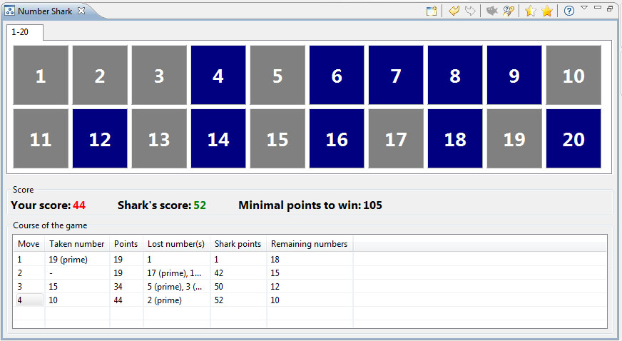
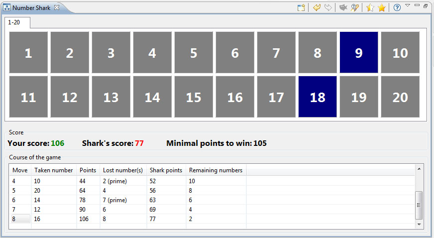
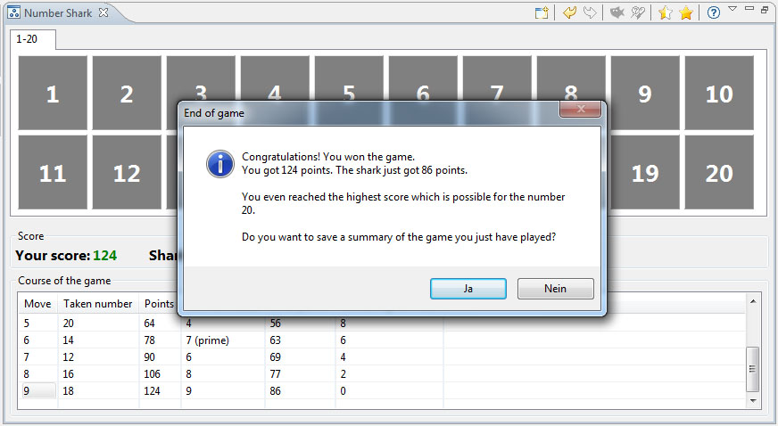
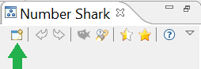

) was pressed.
) was pressed.The Number Shark game is a tool to learn more about divisors and prime numbers. However, if you just like riddles and want to find out, what are the best moves, the Number Shark is also fun.
This tutorial is based on a number set (playing field) from 1 to 20 (the size of the playing field can be changed by starting a new game).
The game seems to be easy for a small number set, but is rather challenging for a huge number set.
The idea of the game is to win many numbers from a given number set and to maximize the sum of these numbers. If your sum of numbers (your score) is bigger than the sum of the Number Shark's numbers, then you won. As a second goal, you can try to come as close as possible to the maximum sum which can be achieved for the given number set. Another term for "maximum sum" is "optimal score".
After selecting one number, the Number Shark eats all free, real divisors of the number (e.g. all real divisors of 6 are 1, 2, and 3; but not the number 6 itself). If the selected number has no free, real divisors any more, the number itself is eaten by the Number Shark. Thus, the Number Shark gets a meal in each round.
The game is over after all numbers have been used, i.e. either have been selected by you or have been eaten by the Number Shark.
The game starts with the following window. In this tutorial, the playing field size is 20. So you can select any number between 1 and 20 (at the beginning of the first round all numbers are "selectable" or "free").
Here a first hint: To achieve an optimal score, always select the largest available prime number as first number. For the number field 1 to 20 this is the 19. This number has only the 1 as free, real divisor. So now start the game by selecting the number 19 in the number set selection area.
As another hint (but not as fixed rule) you can try that the Number Shark doesn't get more than 2 numbers for each of your moves.
After selecting the 19, the Number Shark eats the 1. Additionally, both numbers are colored gray (instead of blue): They are now out of the game and neither active nor free any more.
The detailed course-of-the-game area (the lower table in the last picture) documents your moves: It contains the number of your move (round), your selected numbers, and your current score – as well as the numbers of the Number Shark and his current score. In addition the last column in the table shows how many numbers are still free.
Above the table is the frame "Score" comprising the overall status: Your score in green and the score of the Number Shark in red, as you currently are in front. In addition, the minimum sum necessary to win the game, is shown.
During the move course it often happens, that some single numbers are left which have no free divisors and are no divisors for other free numbers. These numbers cannot contribute to your score any more. If such a situation occurs the button "Shark meal" will be activated. By clicking that button, all these numbers will directly be added to the points of the Number Shark (and won't be active anymore). We recommend to push the button after it became active – you gain a better overview about the really interesting numbers. The following image shows the game after the button "Shark meal" () was pressed.
After the first move, the selection for the next moves will be more difficult. You should try to leave as less numbers as possible for the Number Shark – best is only 1 divisor, in some cases also more. But don't select only small numbers, which have only one divisor, because they may be needed as divisors for larger numbers. For the second move it is recommended to select
15, 14, or 10 [15=3*5, 14=2*7, or 10=2*5].
The window below shows the situation after pushing the 15.
Hints: If you move the mouse over an active number field (e.g. stay over the number 10 for a second), a tooltip (balloon text) will be shown to support your decisions. There, you can read which active divisors the number 10 still got and for which other number the 10 is a divisor: In our case, the 10 has one free divisor (2) left.
We choose the 10 as our next move (and catch up 8 points: 10-2=8). Thus the Number Shark just only leads with 52:44 (+8) instead of 50:34 (+16).

You can get more hints by clicking on the button "Hint" in the toolbar. The hint there recommends to take 20 as the next number. We follow the recommendation and press "Yes". Hints are given only for numbers, which lead to the optimal score; thus in other cases no hint is available and the button is deactivated.
in the toolbar. The hint there recommends to take 20 as the next number. We follow the recommendation and press "Yes". Hints are given only for numbers, which lead to the optimal score; thus in other cases no hint is available and the button is deactivated.
For the next moves you can select the free numbers 16, 12 and 14 in an arbitrary order. All three numbers have only one divisor left and all free divisors are different. If you would like to revise your decision, press the button "Undo" in the toolbar.
In the following image the numbers 14, 12, and 16 were chosen.
The last remaining numbers are now 18 and 9. Please press 18, then the 9 is eaten by the Number Shark and the game is over. The following picture shows the according dialog. Congratulations, you won the game, you even reached an optimal score.
Remark: The numbers 16, 14, and 12 could be chosen in an arbitrary order, so you notice that the move sequence is not unique.
The dialog proposes to save the course of the game to a log-file (.csv): If you agree, the table in the lower part of the Number Shark main window will be exported and can later be opened e.g. in Excel or Calc.

If you want to start a new game, just press the button "New game" in the middle, or the "newstart" icon in the toolbar. The toolbar is displayed in the above right corner of the Number Shark main window and in the next picture (the green arrow points to the newstart icon).
